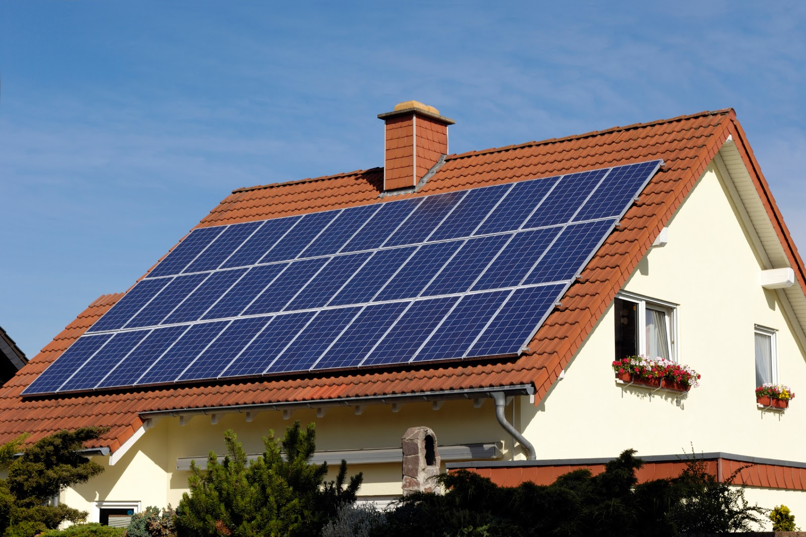

Solar future
It is time to switch to renewable energy sources
Benefit 1: Solar panels are increasingly affordable
Residential solar is more affordable than ever, especially with the extension of the federal residential solar tax credit. Taxpayers can claim a 30% tax credit on the cost of solar systems on their income taxes. But be sure to install before January 1, 2033, when the tax credit is set to decrease to 26%. There are also a number of different financing options to make purchasing solar systems easier and with less money upfront. The monthly amount owed on a solar loan is typically less than an average utility bill.
Benefit 2: You can save money by going solar
Solar offers great potential to save money on your monthly utility bill, and with utility bills trending upward, solar is likely to remain a good money-saving option for years to come. The amount you save depends upon how much electricity you consume, the size of your solar energy system, and how much power it is able to generate. You may also opt for a leased, third-party owned system that allows a homeowner to host a solar energy system on their rooftop and purchase back the electricity generated at a discounted rate, which is not only is often less than utilities charge customers, but also allows electricity rates to be locked in for years.
Benefit 3: You can keep the lights on when the grid goes down
Generating your own solar power can give you the freedom to keep the lights on if there’s a disruption in power. Residential solar energy systems paired with battery storage—generally called solar-plus-storage systems—provide power regardless of the weather or the time of day without having to rely on backup power from the grid. As battery technology improves and financial incentives for energy storage go into effect, deciding to invest in battery storage makes sense for more households across the nation.
Benefit 4: Solar will often increase the value of your home
Buying a solar energy system will likely increase your home’s value. A Berkeley National Laboratory study found that solar photovoltaic panels are viewed as upgrades, just like a renovated kitchen or a finished basement, and home buyers across the country have been willing to pay a premium for a home with an average-sized solar array. As for third-party owned systems, it appears that the impact is largely neutral but can occasionally add value, especially for prepaid leases.
Benefit 5: Solar systems work in a variety of climates
Solar panels only need one thing to generate electricity -- sunshine! Even in the winter when there are fewer hours of daylight, there is still a sufficient amount to power the average American home. That makes solar viable even in Alaska with longer, colder winters. The U.S. Department of Energy's Solar Energy Technologies Office (SETO) is dedicated to ensuring solar panels can withstand the elements no matter your location. SETO funds five Regional Test Centers across the country -- each in a different climate -- to make sure panels perform as best they can, regardless of climate or weather.
Source: energy.gov
Types of solar panels
| Monocrystalline | Polycrystalline | Thin film |
|---|---|---|
 |
 |
 |
| Cells made from a single crystal | Cells made from many crystals fused together | Use different materials including amorphous silicone (a-Si), Cadmium telluride, Copper indium gallium selenide, organic PV |
| Expensive but more efficient | Much cheaper to produce, reduces efficiency | Less efficient, expensive, can be wrapped |
| $1000 | $800 | $600 |
Source: Solar Fast
|  |
Solar energy is the most abundant of all energy resources and can even be harnessed in cloudy weather. The rate at which solar energy is intercepted by the Earth is about 10,000 times greater than the rate at which humankind consumes energy. Solar technologies can deliver heat, cooling, natural lighting, electricity, and fuels for a host of applications. Solar technologies convert sunlight into electrical energy either through photovoltaic panels or through mirrors that concentrate solar radiation. Although not all countries are equally endowed with solar energy, a significant contribution to the energy mix from direct solar energy is possible for every country. The cost of manufacturing solar panels has plummeted dramatically in the last decade, making them not only affordable but often the cheapest form of electricity. Solar panels have a lifespan of roughly 30 years, and come in variety of shades depending on the type of material used in manufacturing. |
|---|
Source: UN